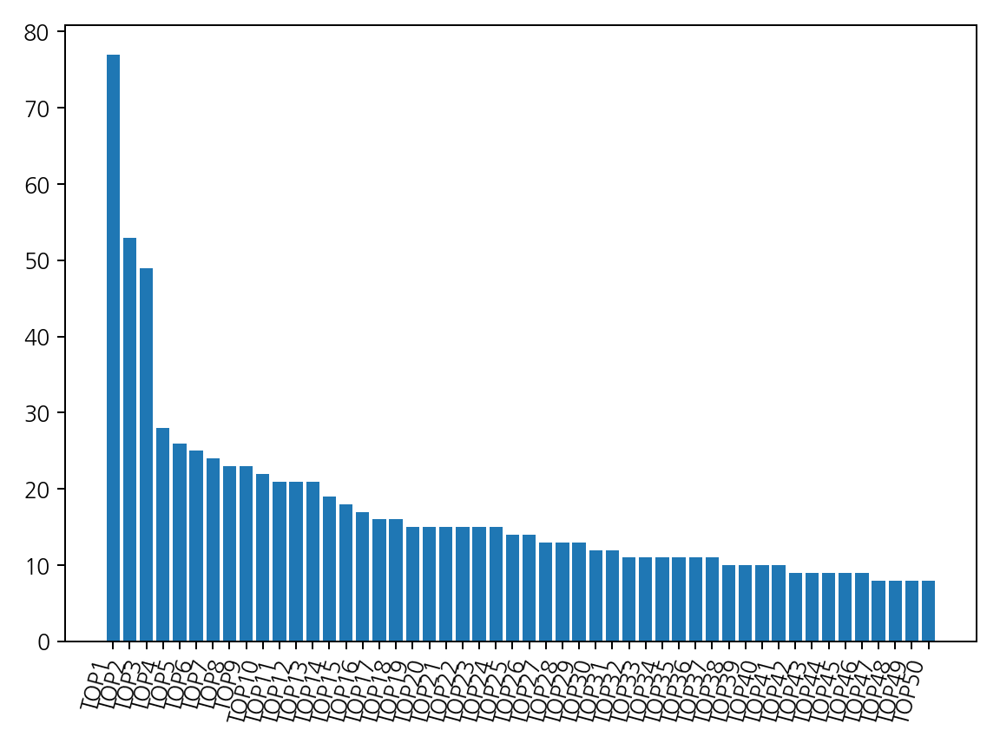

| rank | key | count | avg_conf | label | examples |
|---|---|---|---|---|---|
| 1 | 고 | 77 | 0.393 | NEG | 고 |
| 2 | 에 | 53 | 0.366 | NEG | 에 |
| 3 | 을 | 49 | 0.369 | NEG | 을 |
| 4 | 한 | 28 | 0.392 | NEG | 한 |
| 5 | 는 | 26 | 0.369 | NEG | 는 |
| 6 | 었 | 25 | 0.371 | NEG | 었 |
| 7 | 않 | 24 | 0.397 | NEG | 않 |
| 8 | 만 | 23 | 0.392 | NEG | 만 |
| 9 | 던 | 23 | 0.384 | NEG | 던 |
| 10 | 이 | 22 | 0.381 | NEG | 이 |
| 11 | 같 | 21 | 0.437 | NEG | 같 |
| 12 | 게 | 21 | 0.383 | NEG | 게 |
| 13 | 를 | 21 | 0.366 | NEG | 를 |
| 14 | 았 | 19 | 0.371 | NEG | 았 |
| 15 | 으로 | 18 | 0.405 | NEG | 으로 |
| 16 | 과 | 17 | 0.386 | NEG | 과 |
| 17 | 보다 | 16 | 0.399 | NEG | 보다 |
| 18 | 로 | 16 | 0.396 | NEG | 로 |
| 19 | 니다 | 15 | 0.420 | NEG | 니다 |
| 20 | 되 | 15 | 0.412 | NEG | 되 |
| 21 | 순간 | 15 | 0.400 | NEG | 순간 |
| 22 | 때 | 15 | 0.397 | NEG | 때 |
| 23 | 가 | 15 | 0.381 | NEG | 가 |
| 24 | 은 | 15 | 0.370 | NEG | 은 |
| 25 | 하 | 14 | 0.390 | NEG | 하 |
| 26 | , | 14 | 0.364 | NEG | , |
| 27 | 을 때 | 13 | 0.409 | NEG | 을 때 |
| 28 | 적 | 13 | 0.391 | NEG | 적 |
| 29 | 다고 | 13 | 0.382 | NEG | 다고 |
| 30 | 다 | 12 | 0.399 | NEG | 다 |
| 31 | 있 | 12 | 0.393 | NEG | 있 |
| 32 | 님 | 11 | 0.401 | NEG | 님 |
| 33 | 까지 | 11 | 0.398 | NEG | 까지 |
| 34 | 면서 | 11 | 0.395 | NEG | 면서 |
| 35 | 까 | 11 | 0.380 | NEG | 까 |
| 36 | 이후 | 11 | 0.379 | NEG | 이후 |
| 37 | 며 | 11 | 0.379 | NEG | 며 |
| 38 | 함 | 10 | 0.413 | NEG | 함 |
| 39 | 게 되 | 10 | 0.403 | NEG | 게 되 |
| 40 | 기 | 10 | 0.396 | NEG | 기 |
| 41 | 도 | 10 | 0.385 | NEG | 도 |
| 42 | 곤 | 9 | 0.401 | NEG | 곤 |
| 43 | 아니 | 9 | 0.392 | NEG | 아니 |
| 44 | 셨 | 9 | 0.388 | NEG | 셨 |
| 45 | 생각 | 9 | 0.382 | NEG | 생각 |
| 46 | 결과 | 9 | 0.376 | NEG | 결과 |
| 47 | 자 | 8 | 0.396 | NEG | 자 |
| 48 | 친구 | 8 | 0.396 | NEG | 친구 |
| 49 | 시절 | 8 | 0.395 | NEG | 시절 |
| 50 | 서 | 8 | 0.395 | NEG | 서 |
| 51 | 좋아 | 8 | 0.394 | NEG | 좋아 |
| 52 | 기에 | 8 | 0.390 | NEG | 기에 |
| 53 | 하고 | 8 | 0.390 | NEG | 하고 |
| 54 | 라고 | 8 | 0.389 | NEG | 라고 |
| 55 | 가장 | 8 | 0.383 | NEG | 가장 |
| 56 | 간 | 8 | 0.378 | NEG | 간 |
| 57 | 씩 | 7 | 0.412 | NEG | 씩 |
| 58 | 시간 | 7 | 0.396 | NEG | 시간 |
| 59 | 때문에 | 7 | 0.393 | NEG | 때문에 |
| 60 | 면 | 7 | 0.392 | NEG | 면 |
| 61 | 께 | 7 | 0.392 | NEG | 께 |
| 62 | ’ | 7 | 0.385 | NEG | ’ |
| 63 | 니 | 7 | 0.382 | NEG | 니 |
| 64 | 관계 | 7 | 0.380 | NEG | 관계 |
| 65 | 들과 | 7 | 0.371 | NEG | 들과 |
| 66 | 에게 | 7 | 0.371 | NEG | 에게 |
| 67 | 거라 | 6 | 0.443 | NEG | 거라 |
| 68 | 해 | 6 | 0.407 | NEG | 해 |
| 69 | 에도 | 6 | 0.405 | NEG | 에도 |
| 70 | 부터 | 6 | 0.404 | NEG | 부터 |
| 71 | 했 | 6 | 0.399 | NEG | 했 |
| 72 | 일 | 6 | 0.399 | NEG | 일 |
| 73 | 노력 | 6 | 0.395 | NEG | 노력 |
| 74 | 사실 | 6 | 0.395 | NEG | 사실 |
| 75 | 고, | 6 | 0.385 | NEG | 고, |
| 76 | . | 6 | 0.380 | NEG | . |
| 77 | 였 | 6 | 0.374 | NEG | 였 |
| 78 | 셔서 | 5 | 0.435 | NEG | 셔서 |
| 79 | 때문 | 5 | 0.430 | NEG | 때문 |
| 80 | 남 | 5 | 0.424 | NEG | 남 |
| 81 | 학년 | 5 | 0.418 | NEG | 학년 |
| 82 | 기 시작했 | 5 | 0.417 | NEG | 기 시작했 |
| 83 | 이유 | 5 | 0.416 | NEG | 이유 |
| 84 | 마다 | 5 | 0.410 | NEG | 마다 |
| 85 | 정도 | 5 | 0.409 | NEG | 정도 |
| 86 | 자신 | 5 | 0.403 | NEG | 자신 |
| 87 | 와 | 5 | 0.401 | NEG | 와 |
| 88 | ‘ | 5 | 0.392 | NEG | ‘ |
| 89 | 많 | 5 | 0.390 | NEG | 많 |
| 90 | 어 | 5 | 0.389 | NEG | 어 |
| 91 | 수 | 5 | 0.387 | NEG | 수 |
| 92 | 모습 | 5 | 0.383 | NEG | 모습 |
| 93 | 없이 | 5 | 0.382 | NEG | 없이 |
| 94 | 아 | 5 | 0.380 | NEG | 아 |
| 95 | 는데 | 5 | 0.377 | NEG | 는데 |
| 96 | 다른 | 5 | 0.376 | NEG | 다른 |
| 97 | 결국 | 5 | 0.375 | NEG | 결국 |
| 98 | 어느 | 5 | 0.373 | NEG | 어느 |
| 99 | 들 | 5 | 0.368 | NEG | 들 |
| 100 | 들이 | 5 | 0.363 | NEG | 들이 |
| 101 | 직접 | 4 | 0.436 | NEG | 직접 |
| 102 | 하여 | 4 | 0.424 | NEG | 하여 |
| 103 | 경우 | 4 | 0.422 | NEG | 경우 |
| 104 | 월 | 4 | 0.418 | NEG | 월 |
| 105 | 뿐만 아니라 | 4 | 0.417 | NEG | 뿐만 아니라 |
| 106 | 목표 | 4 | 0.415 | NEG | 목표 |
| 107 | 게 된다 | 4 | 0.411 | NEG | 게 된다 |
| 108 | 주변 | 4 | 0.409 | NEG | 주변 |
| 109 | 기 때문에 | 4 | 0.406 | NEG | 기 때문에 |
| 110 | 라 | 4 | 0.405 | NEG | 라 |
| 111 | 만족 | 4 | 0.404 | NEG | 만족 |
| 112 | 싶 | 4 | 0.402 | NEG | 싶 |
| 113 | 그리고 | 4 | 0.401 | NEG | 그리고 |
| 114 | 집중 | 4 | 0.399 | NEG | 집중 |
| 115 | 겠다 | 4 | 0.397 | NEG | 겠다 |
| 116 | 잘 | 4 | 0.394 | NEG | 잘 |
| 117 | 등 | 4 | 0.394 | NEG | 등 |
| 118 | 적인 | 4 | 0.390 | NEG | 적인 |
| 119 | 특히 | 4 | 0.388 | NEG | 특히 |
| 120 | 함께 | 4 | 0.385 | NEG | 함께 |
| 121 | 경험 | 4 | 0.384 | NEG | 경험 |
| 122 | 처음 | 4 | 0.378 | NEG | 처음 |
| 123 | 하게 | 4 | 0.378 | NEG | 하게 |
| 124 | 지만 | 4 | 0.374 | NEG | 지만 |
| 125 | 않았 | 4 | 0.372 | NEG | 않았 |
| 126 | 동안 | 4 | 0.371 | NEG | 동안 |
| 127 | 그래서 | 4 | 0.366 | NEG | 그래서 |
| 128 | 아닌 | 4 | 0.361 | NEG | 아닌 |
| 129 | 수록 | 3 | 0.467 | NEG | 수록 |
| 130 | 째 | 3 | 0.459 | NEG | 째 |
| 131 | 다행 | 3 | 0.436 | NEG | 다행 |
| 132 | 보고 | 3 | 0.431 | NEG | 보고 |
| 133 | 싶은 | 3 | 0.423 | NEG | 싶은 |
| 134 | 때마다 | 3 | 0.423 | NEG | 때마다 |
| 135 | 가리 | 3 | 0.422 | NEG | 가리 |
| 136 | 학년 때 | 3 | 0.421 | NEG | 학년 때 |
| 137 | 신 | 3 | 0.420 | NEG | 신 |
| 138 | 보 | 3 | 0.419 | NEG | 보 |
| 139 | 습니다 | 3 | 0.414 | NEG | 습니다 |
| 140 | 열심히 | 3 | 0.413 | NEG | 열심히 |
| 141 | 점 | 3 | 0.410 | NEG | 점 |
| 142 | 감 | 3 | 0.410 | NEG | 감 |
| 143 | 같은 | 3 | 0.408 | NEG | 같은 |
| 144 | 더 | 3 | 0.406 | NEG | 더 |
| 145 | 관련 | 3 | 0.405 | NEG | 관련 |
| 146 | 게 된 | 3 | 0.403 | NEG | 게 된 |
| 147 | 최근 | 3 | 0.403 | NEG | 최근 |
| 148 | 많았 | 3 | 0.402 | NEG | 많았 |
| 149 | 감사 | 3 | 0.401 | NEG | 감사 |
| 150 | 수 있 | 3 | 0.400 | NEG | 수 있 |
| 151 | 기도 | 3 | 0.399 | NEG | 기도 |
| 152 | 때부터 | 3 | 0.397 | NEG | 때부터 |
| 153 | 감정 | 3 | 0.396 | NEG | 감정 |
| 154 | 위로 | 3 | 0.394 | NEG | 위로 |
| 155 | 처럼 | 3 | 0.393 | NEG | 처럼 |
| 156 | 이라 | 3 | 0.392 | NEG | 이라 |
| 157 | 냐 | 3 | 0.391 | NEG | 냐 |
| 158 | 대로 | 3 | 0.391 | NEG | 대로 |
| 159 | 동시에 | 3 | 0.390 | NEG | 동시에 |
| 160 | 학교 | 3 | 0.390 | NEG | 학교 |
| 161 | 우연히 | 3 | 0.390 | NEG | 우연히 |
| 162 | 스러 | 3 | 0.390 | NEG | 스러 |
| 163 | 끝내 | 3 | 0.388 | NEG | 끝내 |
| 164 | 이었 | 3 | 0.388 | NEG | 이었 |
| 165 | 믿음 | 3 | 0.387 | NEG | 믿음 |
| 166 | 의지 | 3 | 0.387 | NEG | 의지 |
| 167 | 도록 | 3 | 0.387 | NEG | 도록 |
| 168 | 어떤 | 3 | 0.386 | NEG | 어떤 |
| 169 | 의미 | 3 | 0.386 | NEG | 의미 |
| 170 | 원 | 3 | 0.386 | NEG | 원 |
| 171 | 있었 | 3 | 0.385 | NEG | 있었 |
| 172 | 처음에 | 3 | 0.383 | NEG | 처음에 |
| 173 | 들어 | 3 | 0.383 | NEG | 들어 |
| 174 | 속에 | 3 | 0.383 | NEG | 속에 |
| 175 | 않은 | 3 | 0.382 | NEG | 않은 |
| 176 | 또한 | 3 | 0.378 | NEG | 또한 |
| 177 | 느꼈 | 3 | 0.376 | NEG | 느꼈 |
| 178 | 전 | 3 | 0.375 | NEG | 전 |
| 179 | 중에 | 3 | 0.375 | NEG | 중에 |
| 180 | 기억 | 3 | 0.373 | NEG | 기억 |
| 181 | 에 대한 | 3 | 0.367 | NEG | 에 대한 |
| 182 | 마치 | 3 | 0.363 | NEG | 마치 |
| 183 | 두 | 2 | 0.454 | NEG | 두 |
| 184 | 쯤 | 2 | 0.453 | NEG | 쯤 |
| 185 | 위해 | 2 | 0.439 | NEG | 위해 |
| 186 | 된 지금 | 2 | 0.437 | NEG | 된 지금 |
| 187 | 길 바라 | 2 | 0.430 | NEG | 길 바라 |
| 188 | 어디 | 2 | 0.429 | NEG | 어디 |
| 189 | 시작했 | 2 | 0.428 | NEG | 시작했 |
| 190 | 들으며 | 2 | 0.425 | NEG | 들으며 |
| 191 | 기 때문 | 2 | 0.422 | NEG | 기 때문 |
| 192 | 주 | 2 | 0.421 | NEG | 주 |
| 193 | 선생님 | 2 | 0.420 | NEG | 선생님 |
| 194 | 라도 | 2 | 0.420 | NEG | 라도 |
| 195 | 려 | 2 | 0.420 | NEG | 려 |
| 196 | 다 보니 | 2 | 0.420 | NEG | 다 보니 |
| 197 | 보니 | 2 | 0.419 | NEG | 보니 |
| 198 | 기 시작 | 2 | 0.419 | NEG | 기 시작 |
| 199 | 어느 정도 | 2 | 0.418 | NEG | 어느 정도 |
| 200 | 기보다 | 2 | 0.417 | NEG | 기보다 |
| 201 | 어져 | 2 | 0.417 | NEG | 어져 |
| 202 | 께서 | 2 | 0.416 | NEG | 께서 |
| 203 | 아닐까 | 2 | 0.416 | NEG | 아닐까 |
| 204 | 와서 | 2 | 0.415 | NEG | 와서 |
| 205 | 분야 | 2 | 0.415 | NEG | 분야 |
| 206 | 친한 | 2 | 0.414 | NEG | 친한 |
| 207 | 웠 | 2 | 0.413 | NEG | 웠 |
| 208 | 하면서 | 2 | 0.412 | NEG | 하면서 |
| 209 | 때까지 | 2 | 0.412 | NEG | 때까지 |
| 210 | tv | 2 | 0.410 | NEG | tv |
| 211 | 자면 | 2 | 0.410 | NEG | 자면 |
| 212 | 로운 | 2 | 0.409 | NEG | 로운 |
| 213 | 시 | 2 | 0.409 | NEG | 시 |
| 214 | 신뢰 | 2 | 0.408 | NEG | 신뢰 |
| 215 | 고자 | 2 | 0.407 | NEG | 고자 |
| 216 | 3학년 | 2 | 0.407 | NEG | 3학년 |
| 217 | 게 되어 | 2 | 0.407 | NEG | 게 되어 |
| 218 | 여기 | 2 | 0.405 | NEG | 여기 |
| 219 | 뒤 | 2 | 0.405 | NEG | 뒤 |
| 220 | 고 싶은 | 2 | 0.404 | NEG | 고 싶은 |
| 221 | 보내 | 2 | 0.404 | NEG | 보내 |
| 222 | 으로 남아 | 2 | 0.404 | NEG | 으로 남아 |
| 223 | 되어 | 2 | 0.404 | NEG | 되어 |
| 224 | 좋아해서 | 2 | 0.403 | NEG | 좋아해서 |
| 225 | 긍정적인 | 2 | 0.402 | NEG | 긍정적인 |
| 226 | 맺 | 2 | 0.401 | NEG | 맺 |
| 227 | 특성 | 2 | 0.401 | NEG | 특성 |
| 228 | 단순히 | 2 | 0.401 | NEG | 단순히 |
| 229 | 자연스럽 | 2 | 0.400 | NEG | 자연스럽 |
| 230 | 부 | 2 | 0.399 | NEG | 부 |
| 231 | 좋 | 2 | 0.399 | NEG | 좋 |
| 232 | 알았 | 2 | 0.399 | NEG | 알았 |
| 233 | 면서도 | 2 | 0.397 | NEG | 면서도 |
| 234 | 하다고 | 2 | 0.397 | NEG | 하다고 |
| 235 | 말 | 2 | 0.397 | NEG | 말 |
| 236 | 맞 | 2 | 0.396 | NEG | 맞 |
| 237 | 적으로 | 2 | 0.396 | NEG | 적으로 |
| 238 | 중 | 2 | 0.396 | NEG | 중 |
| 239 | 시기 | 2 | 0.395 | NEG | 시기 |
| 240 | 었기에 | 2 | 0.395 | NEG | 었기에 |
| 241 | 에 비중 | 2 | 0.395 | NEG | 에 비중 |
| 242 | 신경 | 2 | 0.395 | NEG | 신경 |
| 243 | 조차 | 2 | 0.394 | NEG | 조차 |
| 244 | 끝 | 2 | 0.394 | NEG | 끝 |
| 245 | 기준 | 2 | 0.394 | NEG | 기준 |
| 246 | 보다 더 | 2 | 0.393 | NEG | 보다 더 |
| 247 | 는지 | 2 | 0.393 | NEG | 는지 |
| 248 | 후 | 2 | 0.393 | NEG | 후 |
| 249 | 인 | 2 | 0.393 | NEG | 인 |
| 250 | 오랜만 | 2 | 0.390 | NEG | 오랜만 |
| 251 | 다는 | 2 | 0.390 | NEG | 다는 |
| 252 | 편하 | 2 | 0.390 | NEG | 편하 |
| 253 | 나서 | 2 | 0.390 | NEG | 나서 |
| 254 | 여 | 2 | 0.390 | NEG | 여 |
| 255 | 길에 | 2 | 0.389 | NEG | 길에 |
| 256 | 자신을 | 2 | 0.389 | NEG | 자신을 |
| 257 | 대상이 | 2 | 0.389 | NEG | 대상이 |
| 258 | 원하 | 2 | 0.389 | NEG | 원하 |
| 259 | 듯 | 2 | 0.388 | NEG | 듯 |
| 260 | 그대로 | 2 | 0.388 | NEG | 그대로 |
| 261 | 라는 | 2 | 0.388 | NEG | 라는 |
| 262 | 어서 | 2 | 0.388 | NEG | 어서 |
| 263 | 첫 | 2 | 0.387 | NEG | 첫 |
| 264 | 있었고 | 2 | 0.387 | NEG | 있었고 |
| 265 | 비롯 | 2 | 0.387 | NEG | 비롯 |
| 266 | ’ 하 | 2 | 0.387 | NEG | ’ 하 |
| 267 | 자주 | 2 | 0.386 | NEG | 자주 |
| 268 | 주말 | 2 | 0.386 | NEG | 주말 |
| 269 | 수 때 | 2 | 0.386 | NEG | 수 때 |
| 270 | 게 해준 | 2 | 0.385 | NEG | 게 해준 |
| 271 | 않고 | 2 | 0.385 | NEG | 않고 |
| 272 | 들어가 | 2 | 0.385 | NEG | 들어가 |
| 273 | 첫째 | 2 | 0.385 | NEG | 첫째 |
| 274 | 과정에서 | 2 | 0.385 | NEG | 과정에서 |
| 275 | 느껴졌고 | 2 | 0.385 | NEG | 느껴졌고 |
| 276 | 잠시 | 2 | 0.384 | NEG | 잠시 |
| 277 | 상황에 | 2 | 0.383 | NEG | 상황에 |
| 278 | 비밀번호를 | 2 | 0.383 | NEG | 비밀번호를 |
| 279 | 멀리 | 2 | 0.383 | NEG | 멀리 |
| 280 | 출 | 2 | 0.381 | NEG | 출 |
| 281 | 로웠 | 2 | 0.380 | NEG | 로웠 |
| 282 | 않아서 | 2 | 0.379 | NEG | 않아서 |
| 283 | 려고 | 2 | 0.379 | NEG | 려고 |
| 284 | 특별 | 2 | 0.379 | NEG | 특별 |
| 285 | 함을 | 2 | 0.379 | NEG | 함을 |
| 286 | 들이었 | 2 | 0.378 | NEG | 들이었 |
| 287 | 마음 | 2 | 0.378 | NEG | 마음 |
| 288 | ” | 2 | 0.377 | NEG | ” |
| 289 | 만나 | 2 | 0.377 | NEG | 만나 |
| 290 | 다시 | 2 | 0.377 | NEG | 다시 |
| 291 | 덕분에 | 2 | 0.377 | NEG | 덕분에 |
| 292 | 했고 | 2 | 0.377 | NEG | 했고 |
| 293 | 않았고 | 2 | 0.376 | NEG | 않았고 |
| 294 | 으면 | 2 | 0.375 | NEG | 으면 |
| 295 | 지 않 | 2 | 0.374 | NEG | 지 않 |
| 296 | 가족 | 2 | 0.374 | NEG | 가족 |
| 297 | 캣 | 2 | 0.373 | NEG | 캣 |
| 298 | 따라서 | 2 | 0.373 | NEG | 따라서 |
| 299 | 다면 | 2 | 0.373 | NEG | 다면 |
| 300 | 사이에 | 2 | 0.373 | NEG | 사이에 |